This is the code I've made during the 2017 Girls Who Code Summer Immersion Program!
Programming languages learned: python, html, css, java script
Scratch game
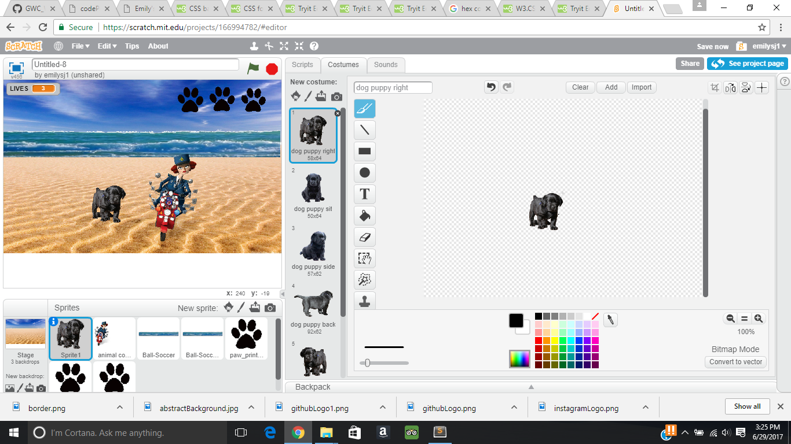
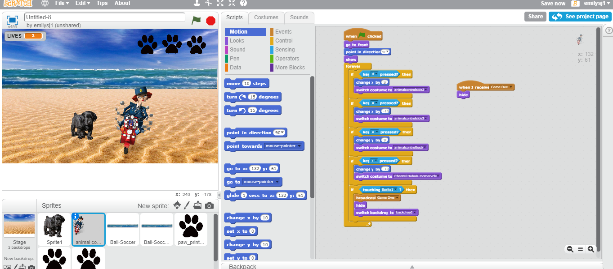
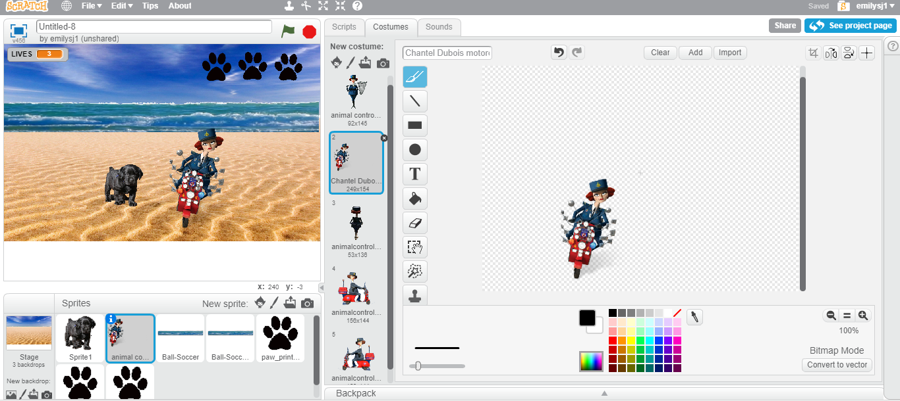
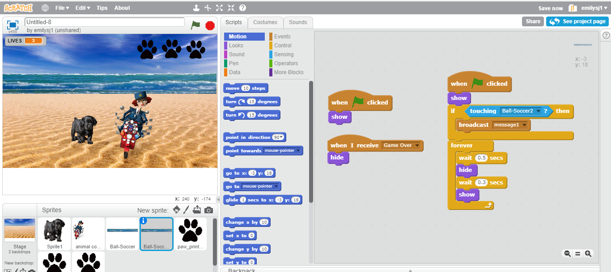
Working with circuits
Bubble Sort- Sorts numbers by order by constantly checking if the next number is greater or less. Binary Search-Looks for the number by checking if the number is greater or less than the half of the data and constantly cutting the data by half the amount.
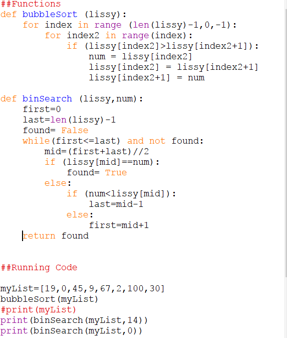
 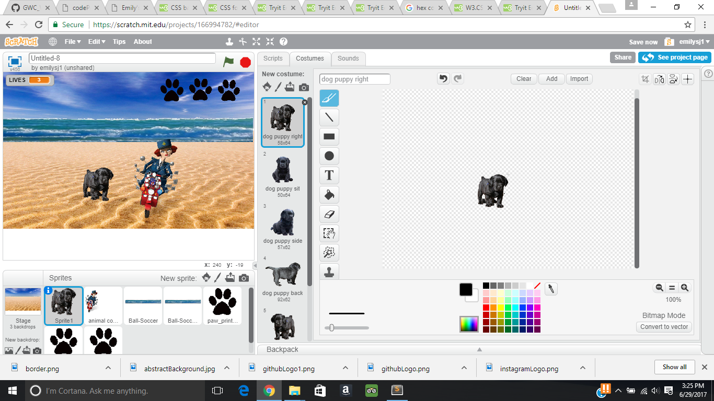
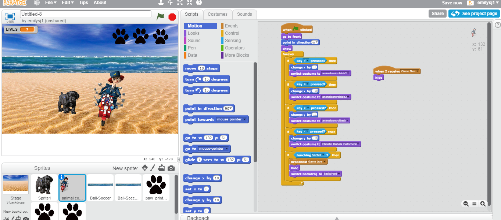
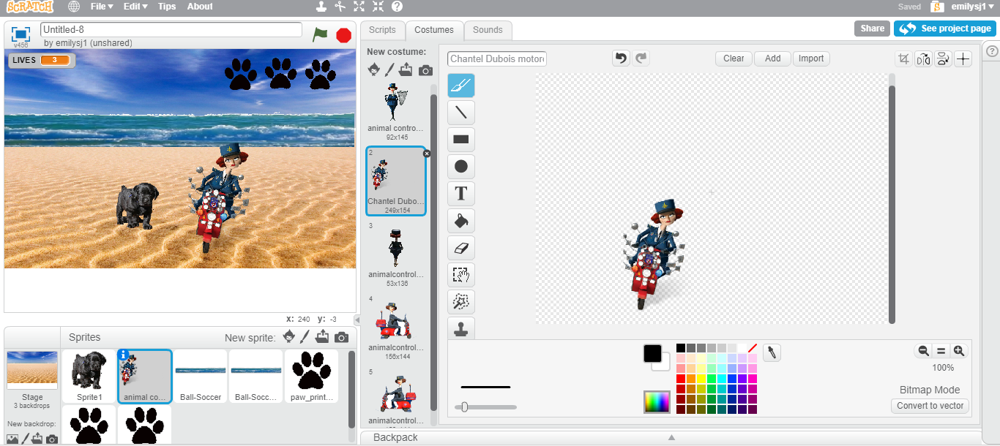
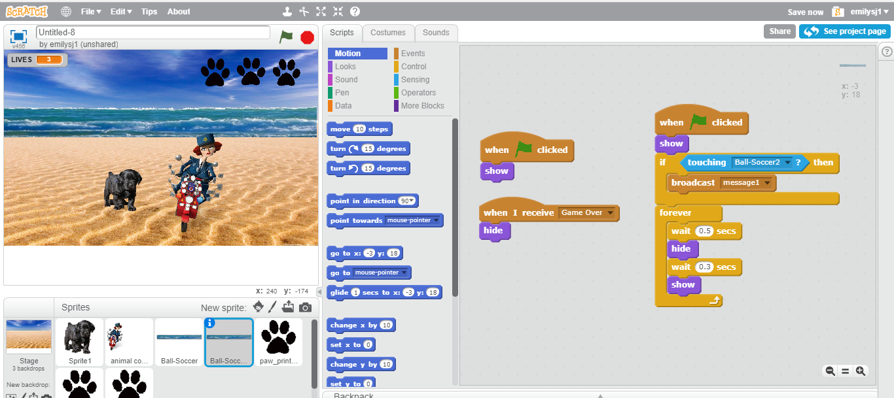
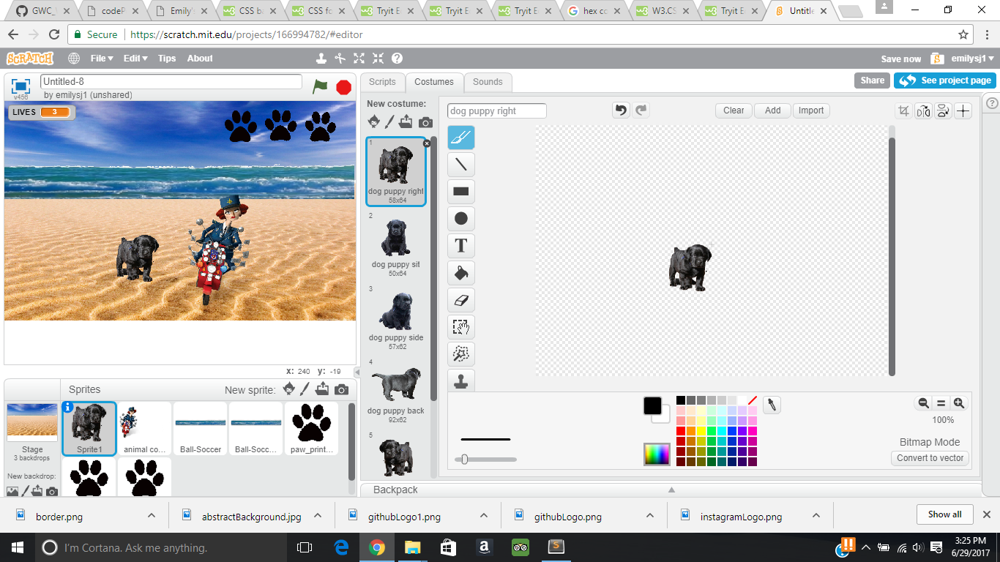
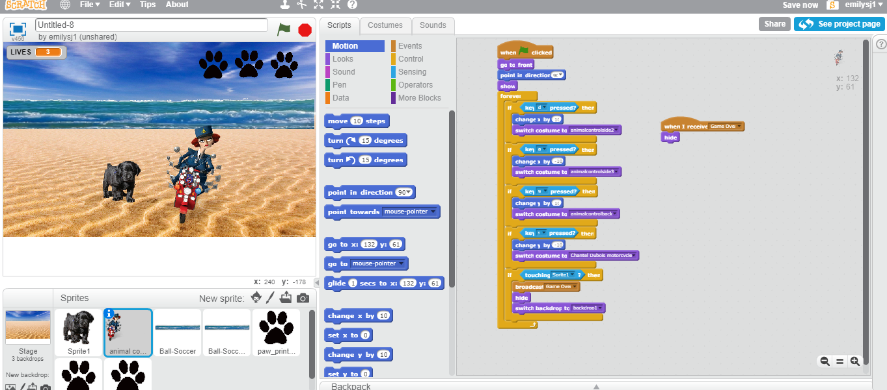
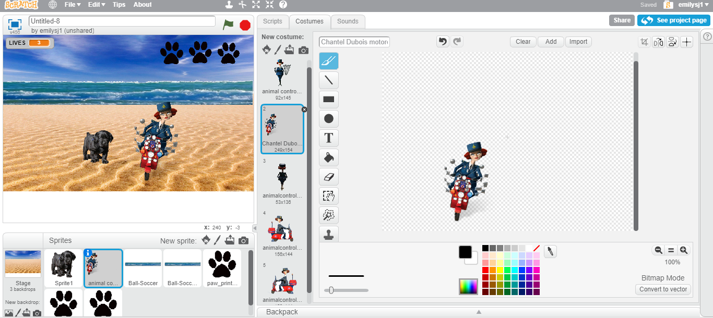
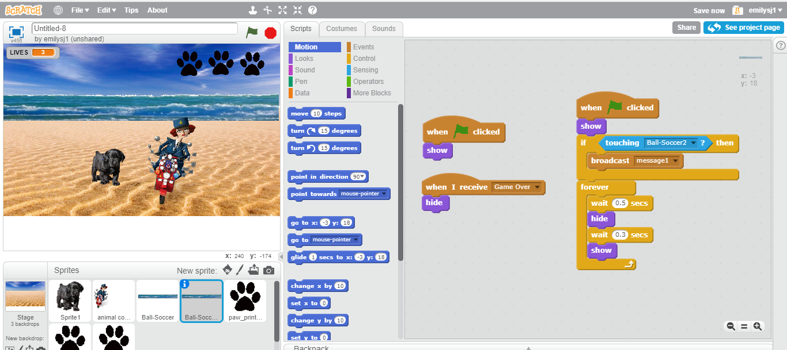